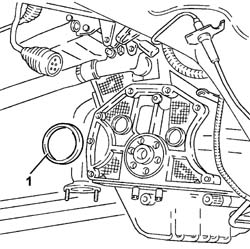
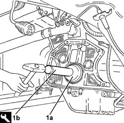

1020D40 Flywheel side OIL SEAL - Replace WITH FLYWHEEL REMOVED
- Path
- Procedures > 10 ENGINE > 1020 CRANKCASE SUMP AND COVERS > 1020D OIL SEALS ON CRANKSHAFT > 1020D40 Flywheel side OIL SEAL - Replace WITH FLYWHEEL REMOVED
- Kind
- repair procedure (removal / refitting; the operation number is the code)
- Applies to
- engines: 3.0 V6, 3.2 V6; all production periods
- Interactive page
- https://sloeber94.github.io/elrnDB-lThss/en/#/210194
Applies to: engines: 3.0 V6, 3.2 V6; all production periods
 Removing
Removing
 Refitting
Refitting1. Release and remove the flywheel side oil seal.

Applies to: engines: 3.0 V6, 3.2 V6; all production periods
Refitting
Removing1. Fit a new flywheel side oil seal (1a) using the tool (1b).
 | Description | Code | Function |
|---|---|---|---|
1b | Fitting tool | 1.860.843.000 | Tool for fitting crankshaft rear oil seal |
